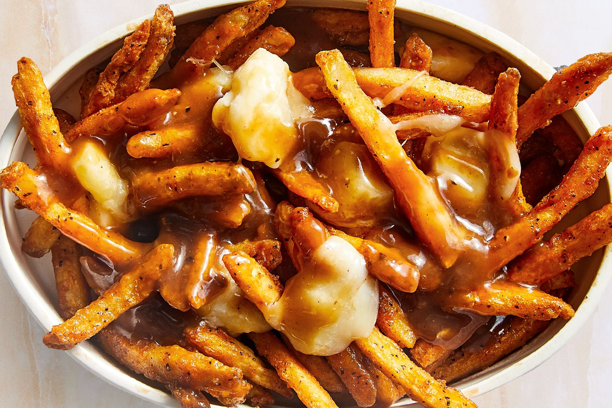

Poutine Recipe

Description
A traditional poutine recipe (pronounced 'poo-teen' or 'poo-tin' in English or 'poo-tsin' in Quebec),
is a bed of fries topped with cheese curds (not mozzarella cheese) and gravy.
Poutine is undoubtedly a Canadian dish that originated in Quebec in the 1950s, although, like many dishes, the true origin is debated.
This recipe takes a total of 7 minutes to follow to completion and serves 4 people.
Ingredients
- Poutine Ingredients
- 1 batch french fries
- 1 + 1/2 cups cheese curds
- Gravy Ingredients
- 1/4 cups unsalted butter
- 1/4 cups all purpose flour
- 1/2 teaspoon onion powder
- 1 teaspoon beef bouillon
- 1 teaspoon chicken bouillon
- 2 cups chicken broth
- Salt and pepper to taste
Steps
- Making the gravy:
- Melt butter in saucepan over medium heat.
- Add flour and cook for 1-2 minutes, stirring well.
- Add bouillon and onion powder and stir.
- Whisk in broth until smooth and thickened.
- Taste and season with salt and pepper, if needed.
- Completing the dish:
- Melt the butter in a saucepan over medium heat. Add the flour and cook for 1-2 minutes, stirring well. Add bouillons and onion powder and stir. Slowly whisk in the broth until smooth.
- Cook, stirring frequently, until thickened. Taste and season with salt and pepper, as needed.
- (Add a cornstarch slurry (cornstarch dissolved in a little water) if you want a thicker gravy, or add additional broth to thin the gravy, as needed).
- Remove from heat.
- Add fries to serving bowl. Top with cheese curds, and ladle gravy on top. Grab a fork and enjoy!